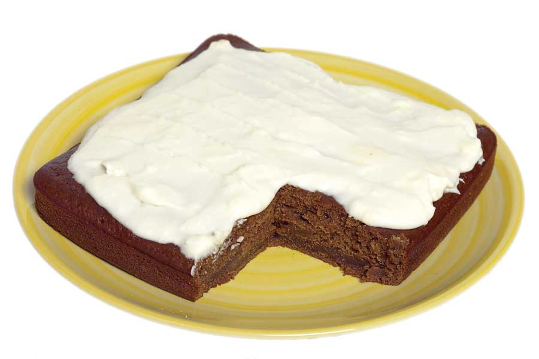

Ingredients:
2 1⁄4 cups unbleached all-purpose flour
1/2 tsp salt
1/2 tsp baking soda
1 tsp ground cinnamon
1/4 tsp ground cloves
1/4 tsp ground nutmeg
1/4 tsp ground cardamom
1/2 tsp ground ginger
1/4 cup blackstrap molasses
1/2 cup honey
1 tsp vinegar
1/2 cup applesauce
1 cup milk
Instructions:
Preheat oven to 350 degrees. Grease and flour a 9-inch square cake pan. Sift together the flour, salt, baking soda and spices. Set aside.
Whisk together the molasses, honey, vinegar, applesauce and milk. Fold in the dry ingredients until completely combined. Pour into the pan. Bake for 25 to 30 minutes, or until a toothpick comes out clean. Allow to cool before frosting. Cream cheese frosting is excellent on this cake, as is the following lemon frosting. Serves 6.
LEMON FROSTING
Ingredients:
1/4 cup butter, softened
11⁄2 cups powdered sugar
2 tbsp lemon juice
Instructions:
Cream the butter. Add the powdered sugar a little at a time, alternating with the lemon juice. Beat until spreadable. If it’s too thick, add a little more lemon juice. Spread on a cooled cake.
|
 EMILY HELLER Cream cheese frosting is excellent on this cake, as is the delectable lemon frosting you’ll find in the recipe below. |
|
|